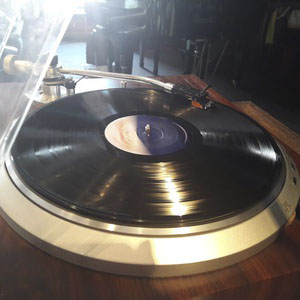

Что происходит в мире рока на пластинках: релизы, переиздания, редкости и знаменательные даты.
Новый альбом легендарных Deep Purple
Релиз 21-го студийного альбома Whoosh! с 13 новыми песнями был запланирован на 12 июня, но из-за COVID-19 премьера состоялась 7 августа.
Изначально музыканты хотели издать альбом во время мирового турне, но по тем же причинам все шоу 2020 года теперь пройдут лишь в 2021 году.
#deeppurple
#newrelease
#rockonvinyl
#живаяисториязвука
10 фактов о Гизере Батлере
Факт основной: 17 июля 1949 года в пригороде Бирмингема Астоне родился Теренс Майкл Джозеф Батлер — живая легенда, бас-гуру, любимец многих поклонников металла, один из отцов-основателей культовой группы Black Sabbath.
Поколения металлистов росли на музыке Black Sabbath, и огромное количество бас-гитаристов поклонялись и поклоняются Гизеру Батлеру.
#BlackSabbath
#GeezerButler
#rockonvinyl
#живаяисториязвука
Пол Маккартни переиздаёт альбом Flaming Pie
Это переиздание, которое Пол курирует лично, является последним на этот момент в серии Archive Collection. Оно будет доступно в нескольких конфигурациях: Collector's Edition включает 5 CD, 2 DVD и 4 LP, Deluxe Edition — 5 CD и 2 DVD, а также отдельные издания на трёх LP, двух LP и двух CD.
Новое издание альбома Flaming Pie выходит 31 июля 2020 года. Оно будет предваряться выходом цифровых синглов.
#FlamingPie
#PaulMcCartney
#newrelease
#живаяисториязвука
Знаменательные даты в истории рока
17 мая 1949 года родился Билл Бруфорд (Bill Bruford) — английский барабанщик, известный своим яростным, виртуозным, полиритмичным стилем игры, ставший первым барабанщиком известной британской прог-рок-группы Yes.
#Yes
#KingCrimson
#БиллБруфорд
#rockonvinyl
#живаяисториярока

Новый сингл The Rolling Stones выйдет на золотом виниле
«Living In A Ghost Town» — так называется первая за последние восемь лет работа группы The Rolling Stones. Дебют сингла на радио состоялся в конце апреля, а через пару дней уже было объявлено о его выходе на 10-дюймовой пластинке, которая будет отпечатана на оранжево-золотистой массе.
В продаже новый релиз появится не раньше конца июня 2020 года.